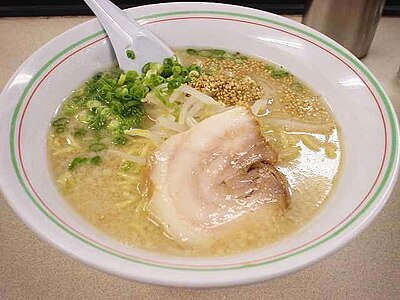
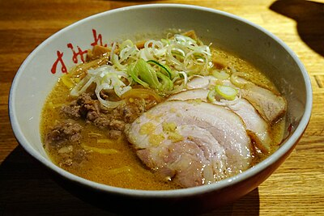
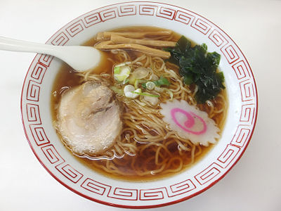
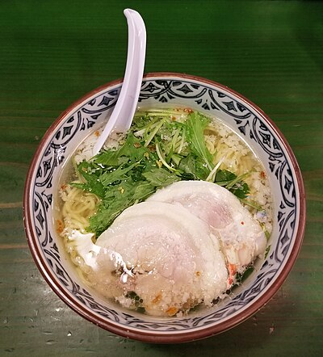
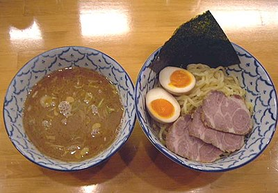
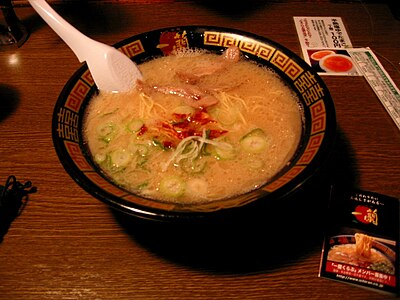
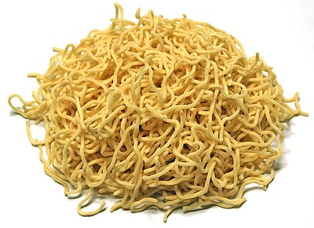
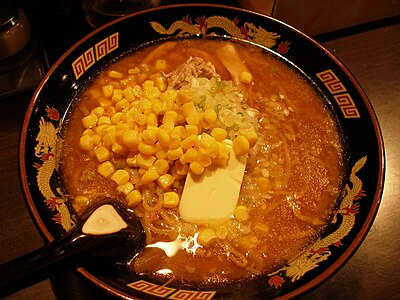

Japan's most beloved noodle soup — four broths, infinite variations
The Four Principal Broth Styles
Every bowl of ramen begins with two elements: the tare (seasoning concentrate) and the soup base (usually chicken, pork, or dashi). The tare defines the style; the base determines the richness. These four tare styles are the foundation of all Japanese ramen.
The original ramen of Tokyo's Shinjuku and Koenji. Clear, brown broth made from chicken or chicken-pork blend seasoned with a soy sauce tare. Complex umami from the soy, subtle sweetness, clean finish. Light to medium-bodied. The most delicate of the four.
The oldest ramen style — salt-seasoned, typically with chicken or seafood base. Pale gold to clear broth. The lightest and most delicate of all styles, allowing the quality of the soup base to shine through. Hakodate in Hokkaido claims it as their own. Often finished with a wedge of lemon or yuzu.
Sapporo's gift to ramen. Fermented soybean paste (miso) mixed with pork or chicken stock creates a rich, opaque, deeply savory broth. Often topped with corn, butter, and bean sprouts. Medium to heavy body. The miso adds probiotic complexity and a slightly funky, fermented depth no other style matches.
Pork bones boiled at a rolling boil for 12–18 hours until the collagen and marrow emulsify into a creamy white broth. Intensely rich, slightly sulfurous, unmistakably porcine. Fukuoka's Hakata style: thin straight noodles, chashu, soft egg, black garlic oil. Hardest style to make, most polarizing flavor.
Toppings — The art of the bowl
A ramen bowl is composed like a painting. Each topping contributes a different texture, flavor, or visual element. The combination of toppings signals the regional style as much as the broth does.
Noodles — Matching noodle to broth
Ramen noodles are made from wheat flour, water, and kansui — an alkaline mineral water that gives ramen noodles their characteristic yellow color and springy texture. The thickness, waviness, and density of the noodle must be matched to the broth's viscosity.
| Broth | Best Noodle | Why It Works |
|---|---|---|
| Tonkotsu | Thin straight | Rich broth clings to thin surface; quick cook prevents overcooking |
| Shoyu | Medium wavy | Waves trap delicate broth; balanced weight for lighter soup |
| Miso | Thick wavy | Robust noodle matches robust broth; holds texture in thick soup |
| Shio | Thin straight or medium | Delicate broth suits delicate noodle; clean pairing throughout |
Regional Ramen — Japan's noodle geography
Every major Japanese city and prefecture has developed its own distinct ramen style — different broths, noodles, toppings, and serving temperatures shaped by local ingredients, climate, and culture. The ramen map of Japan is staggering in variety.
Tantanmen, Tsukemen & Beyond
Beyond the four classic styles, Japanese ramen culture has spawned entire sub-genres with their own devoted followings. These styles often push further in terms of spice, technique, or presentation.
How to Eat Ramen — The full experience
Gallery







